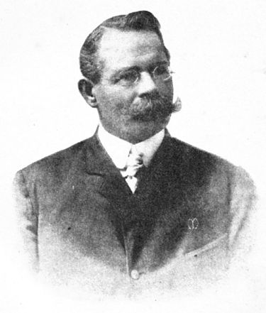

El descubridor científico de la cultura Nazca fue el arqueólogo alemán Federico Max Uhle, quien la estudió por primera vez entre los años 1900 y 1901. Con los hallazgos que hizo en Ocucaje, Uhle identificó el origen y las características de esta cultura, a la que denominó Proto-Nazca, y a la que cronológicamente ubicó como anterior a la expansión de Tiahuanaco (hoy Tiahuanaco-Huari), al lado de otras culturas identificadas también por él: Proto-Chimú (Moche) y Proto-Lima. Dividió a la vez a Proto-Nazca en dos fases, la primera caracterizada por su cerámica decorada con figuras realistas o esquemáticas, y la segunda por incluir dibujos muy estilizados, que ocupaban todo el espacio disponible en la superficie. John Rowe denominó a estas fases, Nazca Monumental y Nazca Prolífero, respectivamente.
